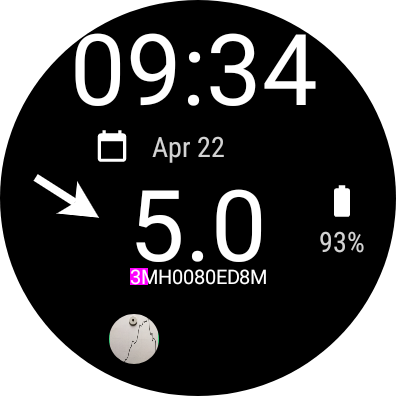
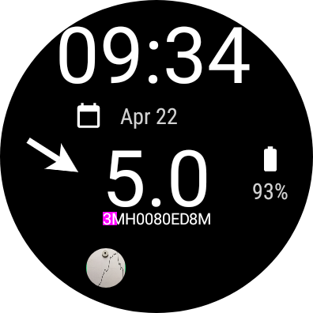
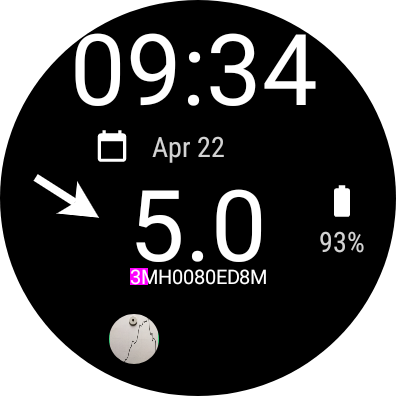
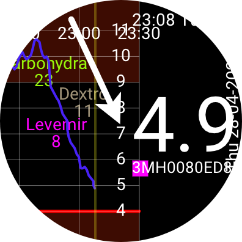
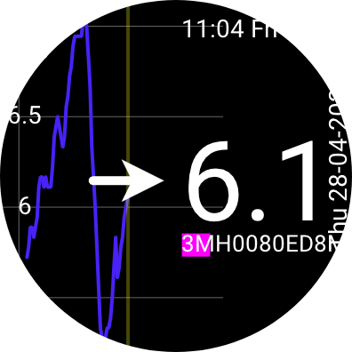
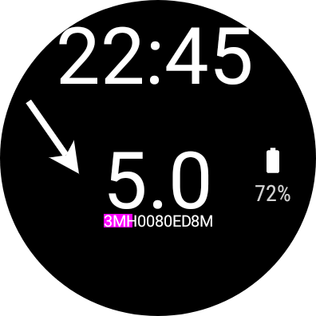
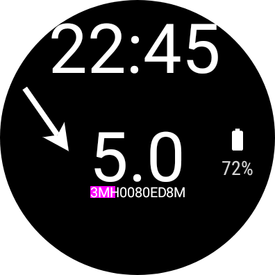

Juggluco for WearOS
Juggluco for WearOS
 Watch face with one complication

Watch face with three complications
Watch face with one complication

Watch face with three complications
 Watch face with four complications
Watch face with four complications
Juggluco for WearOS
Watch face with one complication

Watch face with three complications
Watch face with four complications
Juggluco is now ported to Wear OS. It consists of an adaptation of the smartphone version to the smaller screen of the watch and a watch face that shows the time, the current glucose value received every minute and four complication slots.
 Left menu of Juggluco Wear
Left menu of Juggluco Wear
 Right menu of Juggluco Wear
Right menu of Juggluco Wear
 Watch face with one complication and
music playing
Watch face with one complication and
music playing
 Juggluco Wear
Juggluco Wear
Every sensor has to be initialized by the smartphone version of Juggluco, that sends the sensor data to the watch version. Thereafter, there are two possibilities:
Keep the sensor connected with the smartphone and sends the data from the smartphone to the watch by TCP;
Connect the watch directly with the sensor so that you can know your glucose values without carrying smartphone with you. The glucose values received via Bluetooth by the watch can be sent to the smartphone so that you can still also see them on the larger screen.

Juggluco Wear with amounts displayed

Juggluco Wear
 Specify glucose alarms

Specify glucose alarms

Watch
face
Exact instructions on how to get the watch working is given in the Smartphone version of Juggluco (>2.3.1) under Left menu-> watch-> Wearos Config -> Help.
You will not get Juggluco for Wear OS working without a functioning WIFI connection. From the beginning I had turned off "Mobile battery saver" in the Developer options. After I a factory reset of my watch, I hadn't turned off battery saver and the WIFI connection was constantly turned down. In Left Menu->Mirror wlan=null was shown and Juggluco for Wear OS didn't function at all. I had to turn off battery saver and reinstall Juggluco for Wear OS to get it working.
Developer options are normally not shown. On Samsung Galaxy Watch4, you can get them by going in the watch to settings->About watch->Software and tap 7 times on "Software version". Thereafter they are displayed above "Software Update" in settings.
After about 16 hours, you need to recharge the battery if you are using Juggluco for Wear OS all the time.
Turning "battery saver" on later doesn't seem to be such a big problem: I am using it for days this way without seeing any difference, but maybe it is because I had it turned off earlier.
 You
can download it from this site
https://j-kaltes.github.io/Juggluco/versions.html
or from Google Play. The last is nearly impossible. You should first
send your google account e-mail address to me
jaapkorthalsaltes@gmail.com
to be placed on a list of testers. Then you have to visit a certain
google site to register as a tester and then you should somehow find
Juggluco for WearOs in Google Play on your watch. When and how is
uncertain. Google hopes to increase app quality this way.
You
can download it from this site
https://j-kaltes.github.io/Juggluco/versions.html
or from Google Play. The last is nearly impossible. You should first
send your google account e-mail address to me
jaapkorthalsaltes@gmail.com
to be placed on a list of testers. Then you have to visit a certain
google site to register as a tester and then you should somehow find
Juggluco for WearOs in Google Play on your watch. When and how is
uncertain. Google hopes to increase app quality this way.